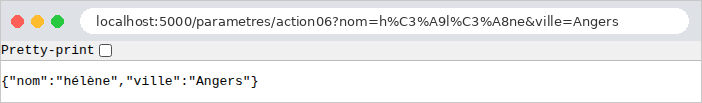

3. The Action Template
An action requires information sent by the browser: the parameters of the URL ([?nom=martin&age=42]), form fields, the request body JSON, and sometimes a request header HTTP. The original course refers to all of this information as the action model. This chapter shows how an action retrieves this information, converts it to the correct type, and validates it. This process is called data binding.
[Flask] is much more minimalist here than other frameworks: it provides access to the request information in the form of character strings and stops there. Converting ["42"] to the integer 42, verifying that a name has at least two characters, and assembling the fields into an object—all of this is the responsibility of the application. We’ll first do this by hand (Example 07), then using the [Pydantic] library (Examples 08–12), which describes a model using a class in which each field specifies its type and constraints. In the next chapter, the HTML forms will be handled by another library, [WTForms], designed specifically for them; [Pydantic] remains the natural tool for the parameters of a URL and for the JSON bodies of the API.
Note on terminology: In the following chapter, the word “model” will primarily refer to the data that an action transmits to its view. The model of an action, as used in this chapter, is what it receives.
Examples 07 through 12 are run in the same way as those in the previous chapter: open a terminal to the example directory, with the virtual environment activated ([python app.py]); [Ctrl-C] stops the server. Their [app.py] files are all similar: a factory [create_app] that creates the application, configures the provider JSON (accents preserved, keys in their original order; see Example 03), and saves a blueprint. We’ll only comment on them when they introduce something new.
3.1. Example 07: The parameters of URL
The parameters for URL are the portion that follows [?]: [?nom=martin&age=42]. This portion is called the query string (*query string*). Each parameter is a pair of [nom=valeur]; the pairs are separated by [&]. The [controllers/parametres.py] file:
- line 11: [request.args] contains the parameters of URL, which have already been decoded by [Werkzeug]. This is a special dictionary, a [MultiDict], which, as we’ll see in Example 10, accepts multiple values per key. Its method [get] returns the value of a parameter, or [None] if it is absent. Unlike [request.args["nom"]], which would throw an exception for a missing parameter, [get] never causes an error;
- line 12: the action displays the value and its type: [type(x)] is the class of [x], and [__name__] is the name of that class. A value retrieved from URL is always a string ([str]);
- line 19: the parameter [type] of [get] specifies a conversion function applied to the string: in this case, [int], the class of integers, whose call to [int("42")] returns 42. If the conversion fails ([int("abc")] raises a [ValueError]), [get] returns [None], just as it would for a missing parameter: the action cannot distinguish between the two cases, and the input error goes unnoticed;
- Lines 26–35: a required parameter and a manual conversion that distinguishes between the two possible errors. [abort(400, message)] terminates the action with a 400 response (*Bad Request*—the request is invalid), accompanied by the message (see Example 03). The statement [try] / [except ValueError] catches the exception thrown by [int];
- line 42: a default value, used if the parameter is missing (or if its conversion fails). This is a typical case for a page number in a list;
- line 50: there is no requirement to name the variable [Python] the same as the parameter of URL. Search engines often use a short parameter, [q] (*query*);
- line 57: [to_dict()] converts [MultiDict] into a standard [Python] dictionary (by retaining only the first value of each parameter), which the action returns as: [Flask] transforms it into JSON (see Example 03).
Let’s test each action with [curl]. A parameter is present, then absent:
The quotation marks around URL are necessary in a terminal: without them, the shell would interpret [&] (which runs a command in the background under [Linux]) and [?]. A value containing spaces or special characters must be encoded in the URL: a space becomes [%20], and [&] becomes [%26] (otherwise, it would separate two parameters). The browser handles this automatically; with [curl], you have to write it out. [Werkzeug] decodes the value before storing it in [request.args]:
The conversion using [type=int], which was successful at first but then failed:
The required parameter for action 03, missing and then invalid:
The default value and the renamed parameter:
Finally, all parameters at once. The parameter [nom] appears twice: [to_dict()] retains only the first value.
The age remained a string (["42"], enclosed in quotes in JSON): no conversion was requested. In a browser (here [Chromium]), JSON appears on a single line: [Flask] only indents JSON in debug mode, and the screenshot was taken without it; the “Pretty-print” checkbox would display it indented. Incidentally, the address bar shows the encoding of accented characters in URL ([é] becomes [%C3%A9], with its two bytes in [UTF-8]):

This first example illustrates the limitations of the manual approach: for each parameter, you must write the reading, conversion, and handling of missing values and errors. With ten parameters, the action’s code would be overwhelmed by these checks. It is better to describe what is expected and let a library handle the verification. That is the purpose of the following example.
3.2. Example 08: An action model described by a class
[Pydantic] is the most widely used data validation library in [Python] (it is at the core of the [FastAPI] framework). It describes the data expected by a class: each attribute has a type and, optionally, constraints. [Pydantic] is responsible for converting the received data into these types and for validating the constraints. It is installed in the example’s virtual environment (file [requirements.txt]).
3.2.1. The model: models/personne.py
- Line 8: A [Pydantic] model is a class that inherits from [BaseModel]. Its attributes are declared at the class level, along with their types, as in a [dataclass] (Example 06);
- Line 10: The model’s configuration. [str_strip_whitespace=True] removes the spaces surrounding the received strings: a name entered as [" martin "] becomes ["martin"] before being validated. The attribute [model_config] is not a field in the template: [Pydantic] recognizes this reserved name;
- Line 13: the field [nom]. [Annotated[str, Field(...)]] reads “the type [str], annotated by [Field(...)].” [Annotated], from the standard module [typing], allows additional information to be attached to a type—information that [Python] ignores but that the libraries read: here, the constraints of [Pydantic], a length of 2 to 20 characters ([min_length], [max_length]). The field has no default value: it is required;
- line 15: the type [int]: [Pydantic] converts the string ["42"] to the integer 42, and rejects ["abc"]. The constraints [ge] (*greater or equal*) and [le] (*less or equal*) limit the value. There are also [gt] and [lt] for strict inequalities;
- line 17: [Literal["Mr", "Mme", "Melle"]] is the type of the three values listed, and only those;
- line 19: [EmailStr] is the type of an email address; [Pydantic] validates its syntax using the [email-validator] library (which is also installed by [requirements.txt]). [EmailStr | None]: an address, or [None]. The default value [= None] makes the field optional.
This template describes the expected data; it contains no validation instructions. This is known as a declarative style.
3.2.2. The action: controllers/personnes.py
- Line 16: The [model_validate] class method creates a [PersonneModele] object from a dictionary—in this case, the one containing the parameters of URL. It performs two actions, in this order: - binding: each value in the dictionary is assigned to the field of the same name, after being converted to the field’s type (["42"] → 42); - validation: the constraints for each field are checked (length, bounds, allowed values, etc.).
- If either step fails, [model_validate] throws a [ValidationError] exception, which contains a list of all errors (not just the first one). The action does not handle it: it stops; we’ll see who takes care of it;
- line 19: [model_dump()] returns the object as a dictionary, which [Flask] can convert to JSON;
- line 20: the age type, to show that the conversion took place.
3.2.3. Error handling: app.py
- Lines 17–21: The decorator [@app.errorhandler(ValidationError)] registers an exception handler: when an action throws a [ValidationError] (or an exception of a derived class), [Flask] calls this function, passing the exception as a parameter, and returns its return value as the response. Declared at the application level, the handler applies to all of its actions: every action that validates a model benefits from it, without having to write a single line of error-handling code;
- Line 19: [e.errors()] returns the list of errors. Each error is a dictionary; We retain two pieces of information: [loc] (*location*), the affected field, in the form of a tuple ([("nom",)]; see Example 10 for a longer tuple), and [msg], the message. The expression [[... for err in e.errors()]] is a list comprehension: it constructs a list by applying the expression on the left to each element;
- line 21: a tuple [(corps, code)] (see Example 03): a dictionary, converted to JSON, and the code 400.
3.2.4. Execution
A valid template:
The age has indeed become an integer (without quotation marks in JSON), and the missing address is [None] ([null] in JSON). A name surrounded by spaces ([%20]) and a present address:
No parameters: the three required fields are missing.
Four invalid fields at once:
All errors are reported at once, allowing the user to correct everything in one go. The messages are in English: [Pydantic] is not translated. The following example replaces them with French messages.
3.3. Example 09: Validation Performed by the Action
In Example 08, an invalid form interrupts the action, and the application handler responds. This is convenient for a API, whose clients are programs that expect a standardized error response. However, a web page often prefers to redisplay the form with the error messages: in this case, the action must decide how to handle an invalid model. The [models/personne.py] model is the one from Example 08.
3.3.1. Messages in French: models/messages.py
- Lines 5–14: Each error in [Pydantic] has a type and a unique identifier (["missing"] for a missing field, ["string_too_short"] for a string that is too short, etc.), independent of the English message. The [MESSAGES] dictionary associates a French message with each type. Some contain tags such as [{min_length}], [{ge}]...: the documentation for [Pydantic] provides, for each error type, the values of its context;
- lines 20–21: the name of the field causing the error, taken from the tuple [loc]. [".".join(...)] assembles the elements of the tuple—converted to strings—separating them with periods;
- lines 25–30: the French error message. [MESSAGES.get(...)] returns [None] for an error type not found in the dictionary; in that case, the English message from [Pydantic] is used. Otherwise, [format] replaces each occurrence of [{nom}] in the message with the value of the same name from the context: ["{min_length} caractère(s) au moins".format(min_length=2)] yields ["2 caractère(s) au moins"]. The notation [**dictionnaire] passes the dictionary entries as named parameters; [erreur.get("ctx", {})] returns an empty dictionary for an error without context.
This technique (translating based on the error type) is the one used in the case study: messages there are identified by keys, which are translated into the user’s language.
3.3.2. The action: controllers/personnes.py
- Lines 14–19: The action itself intercepts the [ValidationError] within a [try] / [except] block. If an error occurs, it constructs a HTML list of errors ([<ul>], one [<li>] tag per error);
- line 22: if successful, a welcome message. The name is passed through the [escape] function in the [markupsafe] library (installed with [Flask]). [escape] replaces characters that have meaning in HTML ([<], [>], [&], ["], [']) with their entities ([<], [>]...): they will be displayed as-is instead of being interpreted. Without this precaution, a user could enter a “name” containing HTML, or even [JavaScript], which would execute in the browser of anyone viewing the page. This is the most common security vulnerability on the web: script injection (*XSS*, *cross-site scripting*). The title and age do not require this protection: their values have been validated by the template (one of three allowed values, an integer). In the next chapter, the [Jinja2] view engine will perform this escaping automatically for any value inserted into a page.
A valid entry, followed by an entry containing four errors:


The raw response to the second query, and the response for a name containing HTML:
The name [<b>martin</b>] (encoded as [%3Cb%3E...] in URL) is displayed as-is, without being bolded: its tags have been neutralized. Note that the response this time is a 200 status code: this is because the action chose to return a normal page containing the errors.
3.4. Example 10: Multiple Parameters
The same parameter may appear multiple times in a URL: [?couleur=rouge&couleur=vert]. This is what a browser sends for a group of checkboxes with the same name, or a multiple-select list (see the next chapter). The [controllers/tableaux.py] file:
- line 14: [get] returns only the first value of the parameter;
- line 21: [getlist] returns all its values in a list, which is empty if the parameter is missing. This is the distinctive feature of [MultiDict]: it retains the list of values for each key;
- lines 27–34: the list is validated using a [Pydantic] template. This time, the model is constructed by a standard call, [ChoixModele(couleur=couleurs)], with the fields passed as named parameters: this is equivalent to [model_validate] on a dictionary. The object created serves no purpose other than validation: it is not retained. The expression [not erreurs] is equivalent to [True] for an empty list.
The template [models/choix.py]:
- Line 10: The type [list[Literal["rouge", "vert", "bleu"]]] is that of a list in which each element is one of three colors. The constraint [min_length=1], applied to a list, pertains to the number of elements: there must be at least one.
The file [models/messages.py] is the one from Example 09. The results:
Validation was successful at first, then failed due to an unknown color, and then due to an empty list:
The "unknown color" error refers to [couleur.1]: the error tuple [loc] is [("couleur", 1)]; the field and index of the problematic element in the list (the second one, with indices starting at 0).
3.5. Example 11: The parameters of a POST query
The previous examples used GET requests, whose parameters are contained in URL. A POST request carries its data in its body, in two main forms:
- fields from a HTML form: the body has the same syntax as a query string ([nom=martin&age=42]), and its type (header [Content-Type]) is [application/x-www-form-urlencoded];
- a JSON document, sent by a program ([JavaScript] on a page, client of a API...): the type is [application/json].
The file [controllers/post.py]:
- line 13: [post.post(...)]: the first [post] is the blueprint, the second is the method that declares a route for the method HTTP POST (see example 02);
- line 16: [request.content_type] is the [Content-Type] header of the request;
- line 18: [request.form] contains the fields of a form sent in POST. Like [request.args], this is a [MultiDict]. [to_dict(flat=False)] actually creates a dictionary where each value is the list of values for the field;
- line 26: [request.get_json()] deserializes a JSON body: the text JSON becomes a [Python] object (a dictionary for a JSON object, a list for a JSON array...). If the body is not declared as JSON, [get_json] causes a 415 error (*Unsupported Media Type*); if it is, but the text is malformed, a 400 error occurs;
- line 32: a field, interpreted as a parameter of URL;
- lines 38–45: the [PersonneModele] template from Example 08, this time linked to the form fields. The code is the same as with the parameters of URL: only the dictionary source changes. [sorted] sorts the messages to ensure a consistent response.
With [curl], the [-d] (*data*) option sends a body; the request then becomes a POST request, of type [application/x-www-form-urlencoded], unless the [-H] (*header*) option specifies a different type. The option [-X POST] explicitly sets the method (it is optional here). The fields of a form, including a repeated field:
A JSON body, which contains an integer and an array:
The quotation marks in JSON are preceded by a [\] to prevent the command string from ending; Under [Linux] and [macOS], you can also enclose JSON in apostrophes: [-d '{"nom": "martin"}']. Unlike form fields, the JSON carries data types: age is already an integer. A body that is not JSON, followed by a malformed JSON:
A single field, then the same URL requested as GET:
URL exists, but not for the GET method: [Flask] returns a 405 (*Method Not Allowed*), and its header [Allow] lists the accepted methods ([OPTIONS] is automatically handled by [Flask] for any route). Finally, the template linked to the form fields, first valid then invalid:
3.6. Example 12: Custom Binding and Validation
Standard types aren’t always sufficient. This example shows three ways to extend binding and validation:
- a path converter: a date in French format, [23-09-2026], in the path of URL;
- a decorator that provides the action with a parameter that does not come from the URL, but from a HTTP header;
- "custom" types for [Pydantic]: a constraint (no spaces) and a conversion (a [jj/mm/aaaa] date).
3.6.1. A path converter: link/date_fr.py
In Example 02, we encountered the [Werkzeug] converters: [<int:id>] accepts only an integer and converts it. You can write new ones.
- line 9: a converter is a class that inherits from [BaseConverter];
- line 11: the attribute [regex] is a regular expression that describes the format of the accepted path segment: [\d] denotes a digit, [{2}] denotes the repetition of the preceding element—in this case, two digits. The prefix [r] in the string (*raw string*) prevents [Python] from interpreting [\]. Routing only attempts to use this converter on a path segment of this form;
- lines 14–20: [to_python] transforms the path text into a [Python] object, in this case a [date]. [datetime.strptime] (*string parse time*) parses a string according to a specific format: [%d] for the day, [%m] for the month, and [%Y] for the four-digit year; [.date()] retains the date without the time. [strptime] verifies that the date exists: [31-02-2026] is in the correct format, but raises a [ValueError]. The converter then raises the [ValidationError] exception from [Werkzeug] (not to be confused with the one from [Pydantic]): for routing, the route does not match the URL, which will therefore result in a 404 error if no other route matches it;
- Lines 23–24: the inverse operation, used by [url_for] to construct a URL from a date. [strftime] (*string format time*) formats a date.
The converter is stored in [app.py]:
- Line 12: [app.url_map] is the application’s routing table; its dictionary, [converters], associates a name with each converter ([int], [path]...). We add ours to it, under the name [datefr]. The entry must precede those of the blueprints that use it.
3.6.2. A parameter provided by a decorator: liaison/langue.py
An action [Flask] receives the path variables as parameters, and nothing else. To provide it with additional information, we can decorate the action: the decorator replaces the action with a function that calculates the information, then calls the action by passing it that information.
- Line 9: A decorator is a function that takes a function (in this case, the action) and returns another function (see Example 01). Writing [@avec_langue] above [def bonjour(...)] is equivalent to writing, after the definition, [bonjour = avec_langue(bonjour)];
- Line 13: The function that will replace the action. [*args] receives positional parameters in a tuple, and [**kwargs] (*keyword arguments*) receives named parameters in a dictionary. This is how [Flask] passes the path variables ([id=3]): the function receives them without needing to know them;
- line 16: a named parameter, [langue], is added. [request.accept_languages] is the request header [Accept-Language], which has already been parsed by [Werkzeug]. The browser specifies the user’s languages here, in order of preference: [fr-FR,fr;q=0.9,en;q=0.8] (the coefficient [q] measures the preference, on a scale from 0 to 1). [best_match] selects, from among the languages offered by the application, the one the user prefers, or the value [default] if none are suitable;
- line 17: the call to the original action, with the received parameters and the new one. The notations [*args] and [**kwargs] unpack the tuple and the dictionary into parameters this time;
- line 12: the function [action_avec_langue] retrieves the name ([__name__]) and documentation of the action. This is essential here: [Flask] names each route after the name of its function (the [bonjour] of [url_for("exemples.bonjour")]), and would refuse to register two routes with the same name, [action_avec_langue], if two actions used the decorator.
We’ll see this approach throughout the course: the [@connexion_requise] and [@role_requis] decorators in the chapter on authentication are built the same way.
3.6.3. "Custom" types for Pydantic: binding/types.py
- Lines 11–14: a validation function: it takes the field’s value as input, returns it if it is valid, and raises a [ValueError] otherwise. The exception message becomes the validation error message;
- line 19: the type [SansEspace] is the type [str], annotated by [AfterValidator(sans_espace)]: [Pydantic] will call the function after verifying (and, if necessary, converting) the value to [str]. This allows us to define, once, a type that can be reused in all models, just like an ordinary type;
- Lines 24–30: a conversion function. The type
***[date]of*[Pydantic]accepts strings in the international format,***[2026-09-23]; we want the French format,***[23/09/2026]. The function receives the raw value: if it is a string, it converts it to [date]. Any other value (a pre-constructed [date]**, for example) is returned as-is; - line 33: [BeforeValidator]: the function is called before the validation of type [date], which therefore receives a pre-constructed [date].
3.6.4. The controller: controllers/exemples.py
- Lines 14–18: The path variable [jour] uses the converter [datefr]: The action receives a [date]. [url_for] constructs the URL for this same action based on the date, using the converter’s [to_url] method. The [\] separator at the end of the line continues the instruction on the next line; two consecutive literal strings are concatenated;
- Lines 23–25: The order of the decorators matters. They are applied from bottom to top: [@avec_langue] first transforms the action, then [@exemples.get] saves the transformed function to the blueprint. In the reverse order, the blueprint would save the original action, and the parameter [langue] would never be provided;
- lines 30–32: a model that uses the two “custom” types as if they were ordinary types. Both fields are optional;
- lines 45–49: an exception handler, this time declared on the blueprint: it handles only exceptions thrown by the actions of this blueprint. [removeprefix] removes the prefix ["Value error, "] from the message, which [Pydantic] adds to messages from [ValueError]. The response is a tuple of three elements: the body, the code, and a dictionary of headers (see Example 03), in this case for a plaintext response.
3.6.5. Execution
The path converter:
The date is displayed by [Python] in international format (this is the result of converting a [date] to a string), but the URL constructed by [url_for] has reverted to the French format. February 31 does not exist: 404. A date in international format, [2026-09-23], does not match the pattern described by the regular expression: 404 as well.
The decorator. The [-H] option of [curl] sets the header [Accept-Language]:
Without a header [Accept-Language] ([curl] does not send one), this is the default language. The chapter on internationalization will revisit this issue, with the user selecting the language.
"Custom" types:
3.6.6. Conclusion
Let’s summarize the methods available to an action for obtaining its template:
Source | Method |
Path variables | the action’s parameters, typed by the converters ([<int:id>], [<datefr:jour>]) |
Parameters of URL | [request.args]: [get] (along with [type] and [default]), [getlist], [to_dict] |
Fields in a POST form | [request.form], a [MultiDict], and a [request.args] |
Body JSON | [request.get_json()] |
Headers | [request.headers], and objects that have already been analyzed, such as [request.accept_languages] |
Conversion and validation | a template [Pydantic]: [model_validate], [ValidationError], [e.errors()] |
Common errors | [@app.errorhandler] (entire application) or [@blueprint.errorhandler] (a blueprint) |
Calculated parameter | A decorator that adds a named parameter to the action |
HTML forms, on the other hand, require more than just validation: they must be displayed, re-displayed with the user’s input and any errors, and protected against forged requests. This will be the role of [WTForms], covered in the next chapter once views have been introduced.